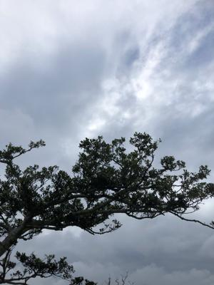
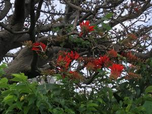

うるがいの話 ある日
最新: 若夏国体【うるがいの話 ある日】とは 一日だけのプログです
『うるがいの話』の最新一日だけのプログで、通信料が少なく経済的だ。カニの画像をクリックすると全ての日付が載る『うるがいの話』サイトを表示します
|
|
【うるがいの話】 うるがい(ｳﾙｶﾞｲ urugai)とは、『もずくがに』の名前でとても大きくなります。 |
|---|---|
|
|
【カミマヤーの話】 猫のことを方言でマヤーといいます。カミマヤー（kamimayaa）とは、神の猫のことです。 |
|
【たながぁの音楽】 たながぁ（ﾀﾅｶﾞｰtanagaa）とは手長えびのことで、何種類かあり大きいのは車 エビぐらいになります。 |

|
【ぶながぁの話】 ぶながー(bunagaa)とは、赤い髪の毛、赤い身体、そして身長は１ｍ２０ｃｍ ぐらい、川の蟹を食べているの目撃された。場所は沖縄県国頭郡大宜味村のと ある村僕の隣近所に住んでいる爺さんから、聞いた話です。 |
|
|
【ギーマの話】 ギーマ(giima)とは、山原の里山に咲くスズランに似た、 花を付けます。実は食べられます、 気が付くと口の周りが紫になっています。 |
2022年04月23日 (土）若夏国体
16:36

復帰の翌年、私は中学３年生で、村の道路を聖火リレーランナーとして走った
そのためにラン二イングシャツ、パンツ、靴（多分）一式を頂いた。着たのも
その限りだったと思うが。５年前（２０１７年）に全国版で放送していたＮＨ
Ｋの平均年齢６６歳のバスケットボールチームがでる「俺たちに明日はない“
バスケおじぃ”最後の挑戦」を見る。リード約のコハマさんが試合直前で『不
整脈』の診断により試合に出れない（思わずそこで笑ってしまった、私と一緒
ジャン）、キャプテンは膝を手術、中には半年前からギックリ腰のため腰にサ
ポータを巻いている。いやはや、トンでもない人達が出ていた。ベスト４（３
回戦）でオリンピック選手のＯＢ達がいる東京のチームにワンサイドで負けた
が。素晴らしい！、と感動した。会社で一期後輩のヤマモ君は、私が退職する
まで時々バスケをしていたようだ。数年前に試合で肩を痛め、本来は病院へ行
かなければいけないと言っていたが、仕事で休みが取れずそのうち、痛みが治
まってしまった。老人にはバスケは無理である、ウフフ。

子供が物資を調達しに家に来た、『傷病手当』から『失業手当』に移ったと言
い、初回の手当が少ないので少し・・・、と空気を読み少し補充して帰った。
１６時２４分 ビットコインの総資産 ￥１４、７５３↓